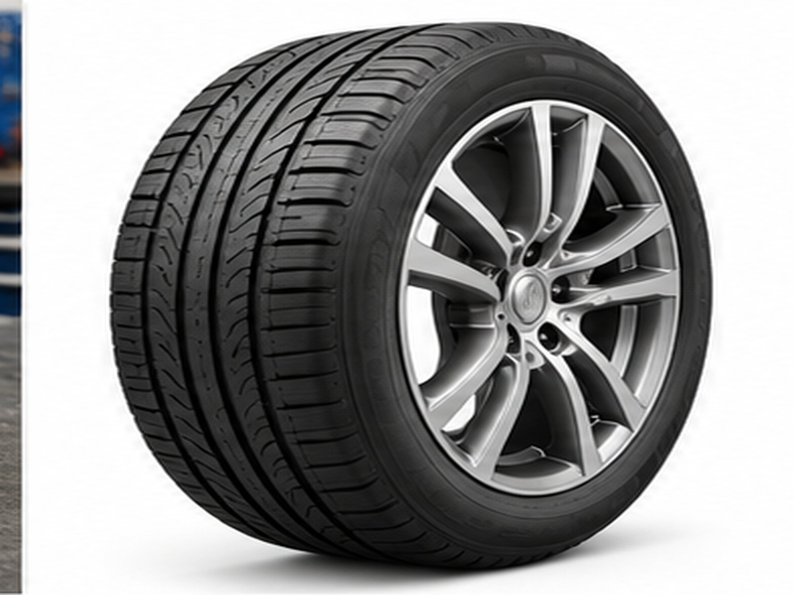

ПРИЧИНЫ
Вероятные причины
Дисбаланс колёс
45%Деформация шины/диска
25%Ступица / подшипник
15%Привод / тормоза
15%
Руль или кузов заметно вибрирует в определённом диапазоне скорости.
Если вибрация появляется только на определённой скорости, первым делом проверяют колёса и балансировку.
Осматривают шины на повреждения и диски на деформацию.
Если вибрация меняется только при торможении или разгоне, список причин расширяется до тормозов и приводов.
Выбор сохранится в браузере.
Сохраняйте неисправности и руководства кнопкой ♡.